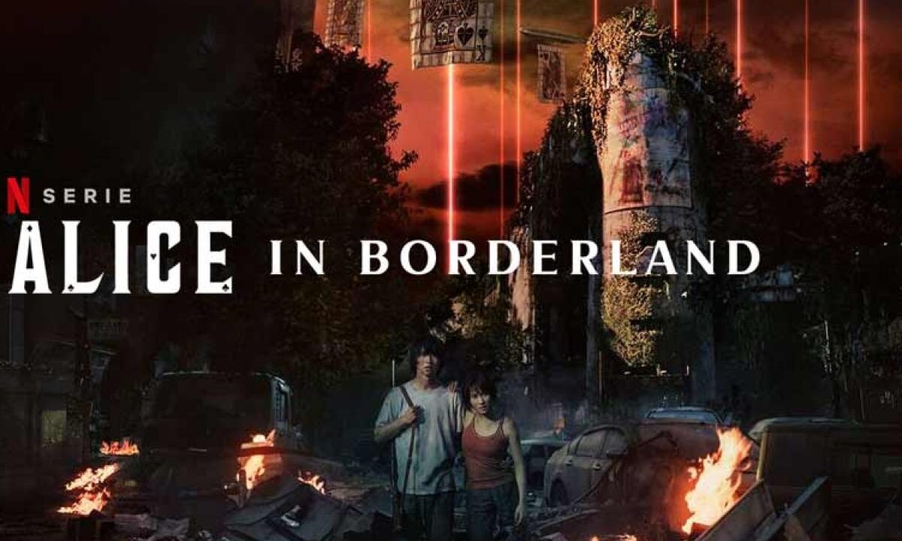
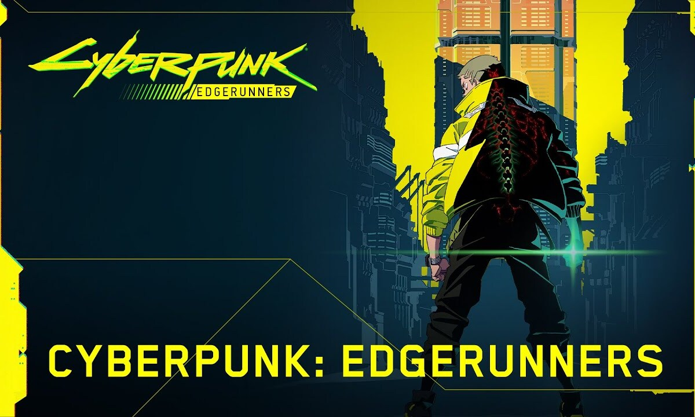

RESEÑAS DE SERIES
Nuestras últimas reseñas de las series que han estrenado nuevas temporadas este año

🟡Mente (10): Lo bien que está pensada esta serie es brutal. Cada juego te tiene enganchado tratando de descifrar como lo van a ganar, tienen emoción, dinámica, e incluso no fallan en lógica que no es para nada poco importante. Tiene similitudes a "El Juego del Calamar", pero mucho mejor trabajada, con mejores y más personajes y un concepto usado pero útil que hace que estemos tan perdidos como los mismos personajes, lo cual la hace más interesante aún.
🔴Realidad (9): Cuando parece que estas entendiendo todo, la serie te hace girar el timón de toda lógica y volves a perderte, y un poco juega con eso constantemente. Me hubiera gustado que dieran alguna info más para quien no es lector del material original, pero la gracia era esa. Un nudo de ideas que aún no logro descifrar pero me encanta.
🔵Espacio (7): La trama es brillante, pero hace que en cierta forma nos queden muchos datos y momentos "estancados", especialmente con respecto a la investigación que venían haciendo en la T1 y esta vez quedó más en el aire aún. Seguramente se responda más adelante, pero faltó un pequeño adelanto.
🟠Alma (9): El desarrollo de los personajes es impecable. Se formó un equipo sólido de protagonistas, cada uno diferente y hasta logrando tener su "momento de gloria" todos. Incluso los nuevos suman y se vuelven importantes. Lo único que me choca es la "inmortalidad" de algunos a pesar de recibir cientos de balazos y puñaladas.
🟣Poder (9): La ambientación apocalíptica es espectacular y los efectos especiales no le envidian a ninguna producción. Logran visualmente estar a la altura de cualquier gran serie.
🟢Tiempo (8): Otra temporada de 8 episodios que no le sobra nada, que tiene un gran ritmo, y que se logra ver en corto tiempo sin sentirse nunca pesada. Me hubiera gustado algo más de respuestas.
Disponible en Netflix
The Hood
Guantelete (8.6) SIN SPOILERS de Alice in Borderland (Temporada 2)
🔴Realidad (9): Cuando parece que estas entendiendo todo, la serie te hace girar el timón de toda lógica y volves a perderte, y un poco juega con eso constantemente. Me hubiera gustado que dieran alguna info más para quien no es lector del material original, pero la gracia era esa. Un nudo de ideas que aún no logro descifrar pero me encanta.
🔵Espacio (7): La trama es brillante, pero hace que en cierta forma nos queden muchos datos y momentos "estancados", especialmente con respecto a la investigación que venían haciendo en la T1 y esta vez quedó más en el aire aún. Seguramente se responda más adelante, pero faltó un pequeño adelanto.
🟠Alma (9): El desarrollo de los personajes es impecable. Se formó un equipo sólido de protagonistas, cada uno diferente y hasta logrando tener su "momento de gloria" todos. Incluso los nuevos suman y se vuelven importantes. Lo único que me choca es la "inmortalidad" de algunos a pesar de recibir cientos de balazos y puñaladas.
🟣Poder (9): La ambientación apocalíptica es espectacular y los efectos especiales no le envidian a ninguna producción. Logran visualmente estar a la altura de cualquier gran serie.
🟢Tiempo (8): Otra temporada de 8 episodios que no le sobra nada, que tiene un gran ritmo, y que se logra ver en corto tiempo sin sentirse nunca pesada. Me hubiera gustado algo más de respuestas.
Disponible en Netflix

🟡Mente (9): Netflix sigue pegándola con adaptaciones de juegos en anime. Sus guionistas dieron una historia bien atrapante. Hiroyuki Imaishi (Tengen Toppa Gurren Lagann; Kill la Kill) se encarga de la dirección.
🔵Espacio (9): Parece un anime de acción como tantos, solo que en escenarios que van a reconocer de videojuegos. En los primeros caps hay varios clichés del protagonista, su mundo cyberpunk y los compañeros de la pandilla, pero a medida que avanzan los capítulos se va convirtiendo en “algo más”.
🔴Realidad (10): No sé qué pensaré cuando se me pase la resaca de la serie, pero pienso en otros animes basados en videojuegos y ninguno creo que se acerque a la grandeza de esta. Antaño, las animaciones basadas en juegos pasaban por vagos relatos en los que la presencia de los personajes parecía correr con el único interés de convertirse en una nueva pieza más del engranaje de la mercadotecnia que acompaña a la licencia; aquí se ha querido contar y crear algo valioso que sea recordado por los espectadores.
🟠Alma (9): David es un gran personaje. Inicialmente es fácil simpatizar con él debido a lo mucho que sufre por culpa de un capitalismo desmedido que no se diferencia mucho del nuestro. Parece el típico novato torpe pero que se sale con la suya porque “es especial”, pero evoluciona mucho a lo largo de la serie. A su lado está Lucy, una bella y misteriosa netrunner que parece la femme fatale de turno pasado trágico incluido. Los demás cuentan con diseños increíbles y están bien trabajados en personalidad, pero prefería más profundidad en su pasado.
🟣Poder (10): Exquisita en todos los aspectos. No ahorraron en violencia cyberpunka, sexo, y tiene un estilo brillante en lo animado que no suele verse en Netflix. La música es sensacional. Seguramente esperan escuchar algo mucho synthwave, ya que es el tipo de música que acompaña a las obras cyberpunk. Se llevarán una sorpresa con This fire Franz Ferdinand como opening.
🟢Tiempo(9): 10 episodios con una historia autoconclusiva, quede tan satisfecho que me puse a jugarlo.
Wallcrawler
Guantelete (9.3) SIN SPOILERS de Cyberpunk: Edgerunners
🔵Espacio (9): Parece un anime de acción como tantos, solo que en escenarios que van a reconocer de videojuegos. En los primeros caps hay varios clichés del protagonista, su mundo cyberpunk y los compañeros de la pandilla, pero a medida que avanzan los capítulos se va convirtiendo en “algo más”.
🔴Realidad (10): No sé qué pensaré cuando se me pase la resaca de la serie, pero pienso en otros animes basados en videojuegos y ninguno creo que se acerque a la grandeza de esta. Antaño, las animaciones basadas en juegos pasaban por vagos relatos en los que la presencia de los personajes parecía correr con el único interés de convertirse en una nueva pieza más del engranaje de la mercadotecnia que acompaña a la licencia; aquí se ha querido contar y crear algo valioso que sea recordado por los espectadores.
🟠Alma (9): David es un gran personaje. Inicialmente es fácil simpatizar con él debido a lo mucho que sufre por culpa de un capitalismo desmedido que no se diferencia mucho del nuestro. Parece el típico novato torpe pero que se sale con la suya porque “es especial”, pero evoluciona mucho a lo largo de la serie. A su lado está Lucy, una bella y misteriosa netrunner que parece la femme fatale de turno pasado trágico incluido. Los demás cuentan con diseños increíbles y están bien trabajados en personalidad, pero prefería más profundidad en su pasado.
🟣Poder (10): Exquisita en todos los aspectos. No ahorraron en violencia cyberpunka, sexo, y tiene un estilo brillante en lo animado que no suele verse en Netflix. La música es sensacional. Seguramente esperan escuchar algo mucho synthwave, ya que es el tipo de música que acompaña a las obras cyberpunk. Se llevarán una sorpresa con This fire Franz Ferdinand como opening.
🟢Tiempo(9): 10 episodios con una historia autoconclusiva, quede tan satisfecho que me puse a jugarlo.